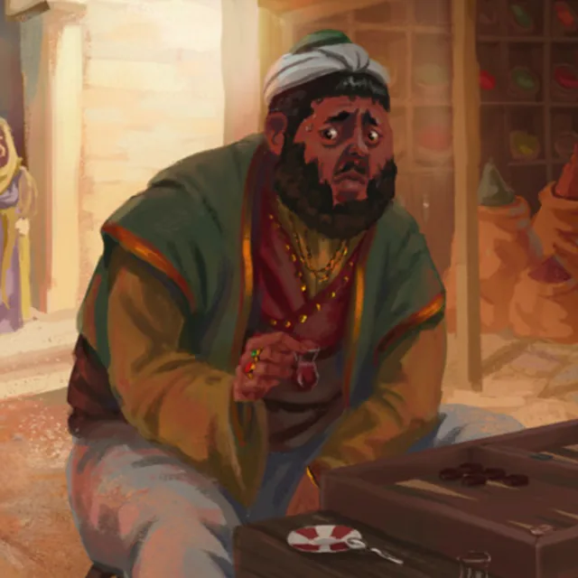

Nazif was a tall man, standing above six feet, got up in a loose shirt laced at the throat after the manner of a shoelace. He kept a prosperous perfume shop, Nazif's Scents, in the Grand Bazaar — a place ostentatious in its fittings, drawing a clientele of every description, where the whole culture of the crafting and the selling of scents was carried on with no little ceremony. He held, besides, a quieter office: he was a keeper of one of the ways down into the Undercity.
It was in that latter capacity that the company first had dealings with him. When Gizem Faruki approached him in search of passage below, Nazif confirmed that he could arrange the thing, though not without a toll; he took a toll coin of Sidra to cover her entry, and led the party to an old stone door that gave onto well-lit stairs descending to a carpeted hall of stone, and thence to the thronging marketplace of the Undercity.
His fortunes turned black some while later, amidst the bustle of the Festival of Candles. He had fallen to talking business — fretful for his trade, in converse with his fellow merchants, Chique Manu chief among them — when the Ghost of March confronted him, an imposing figure clad in an old Imperial uniform and bearing a whip of tempered steel. The Ghost charged him with grinding his own people down beneath the weight of tributes, and with betrayal, his offices already supplanted by the Council of the Ninth Life; Nazif visibly paled, the fear washing over him as he knew the Ghost for a master to be obeyed, and in one swift and brutal motion the whip lashed out, ensnared him, and snapped his neck. Gizem Faruki confirmed him dead, coming upon the body in the seating-area whilst Chique Manu stood by in his shock; and the killing prompted the Bostanji Imperial Guard to declare a state of emergency and to set about scattering the crowd, so kindling much talk of what it must mean for the balance of power in the city.
After his death the company set about examining his perfumery stall in the Grand Bazaar, the better to learn who now held the keys to the Undercity's approaches — and there it came to light that Nazif had already been relieved of those duties by the Ghost of March, a token of no small shift in the Undercity's order of power.